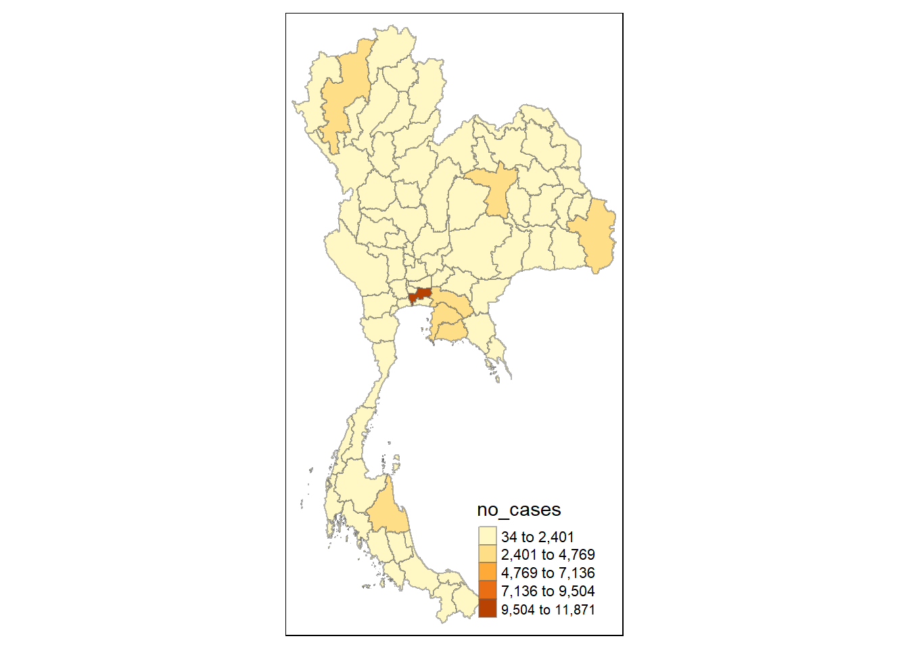
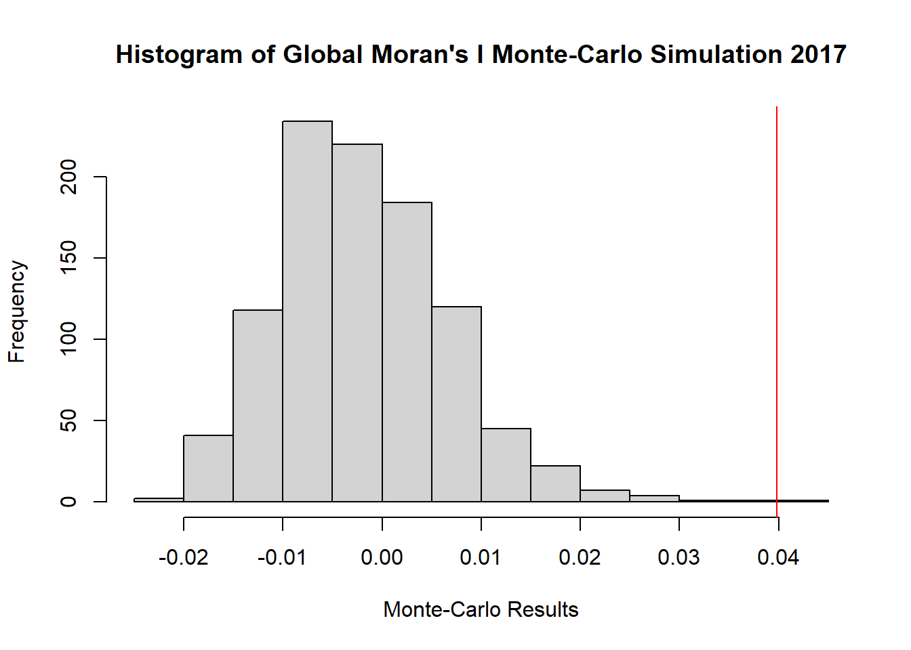
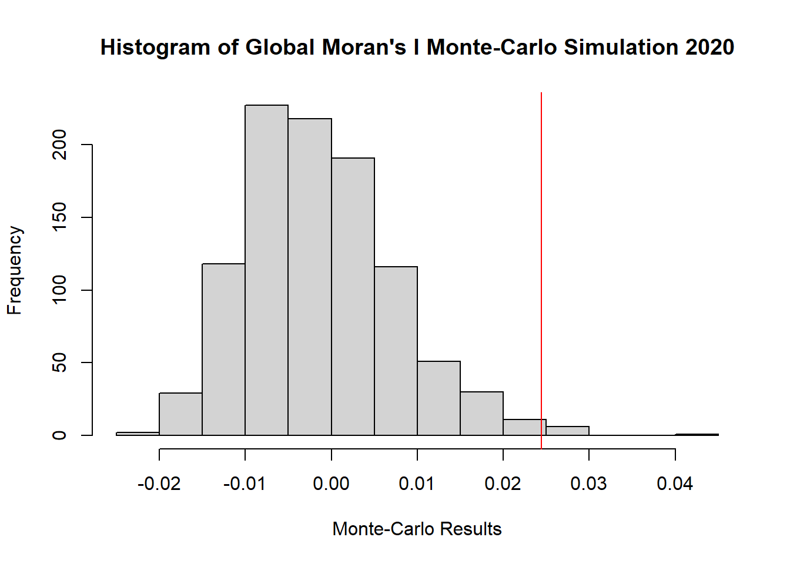
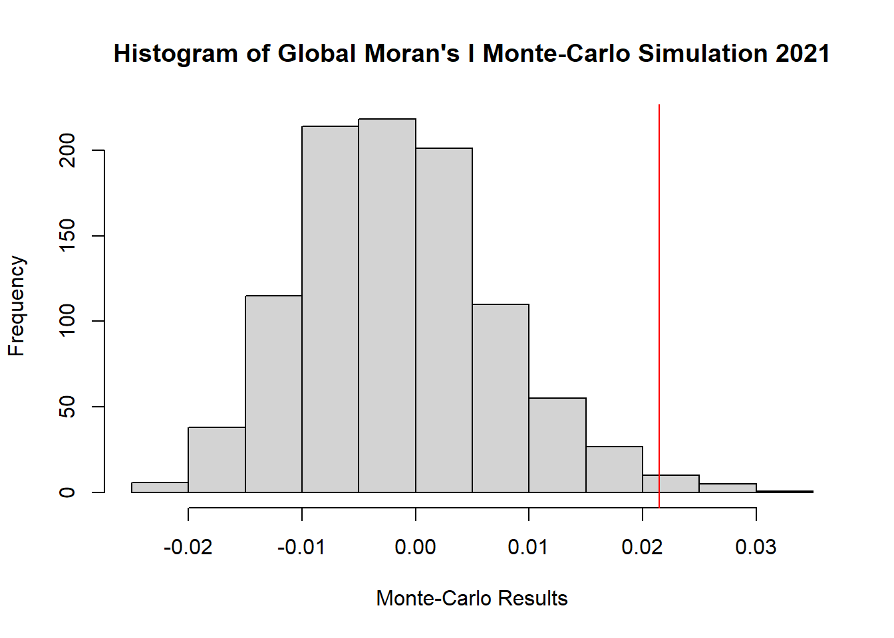
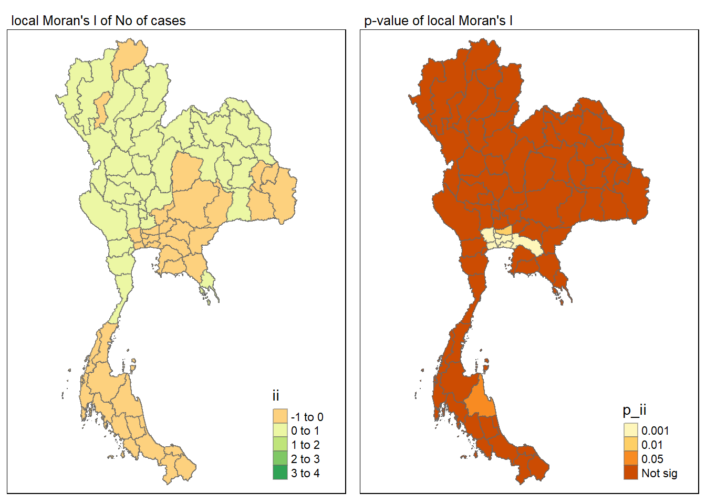
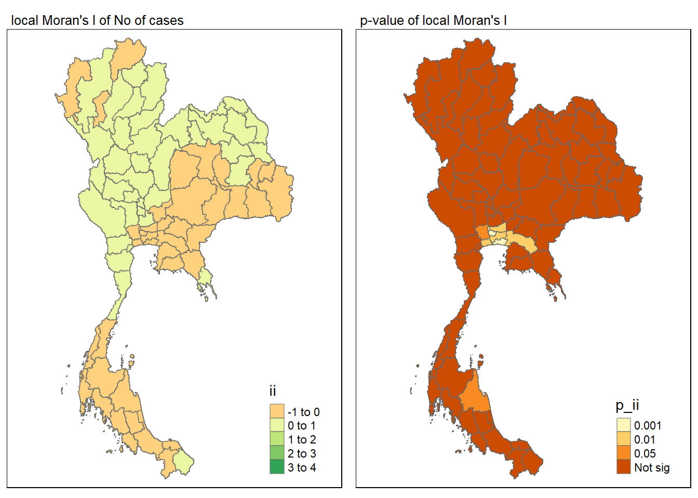
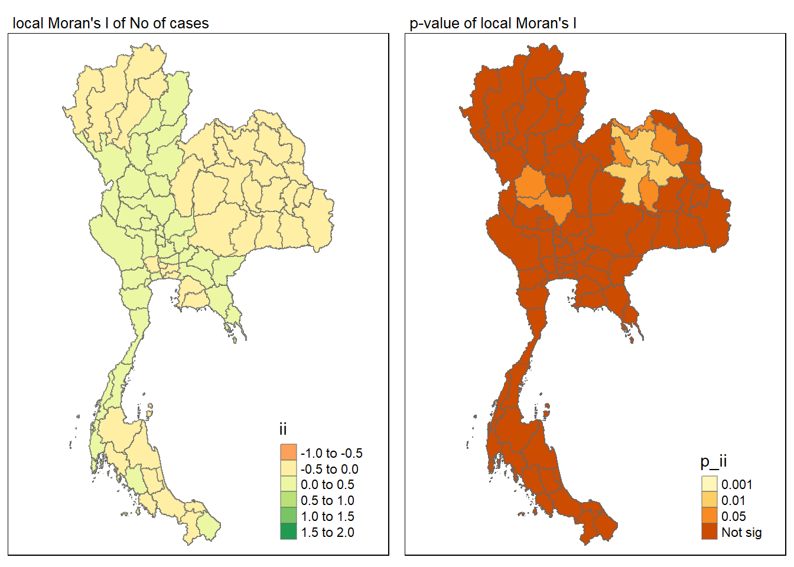
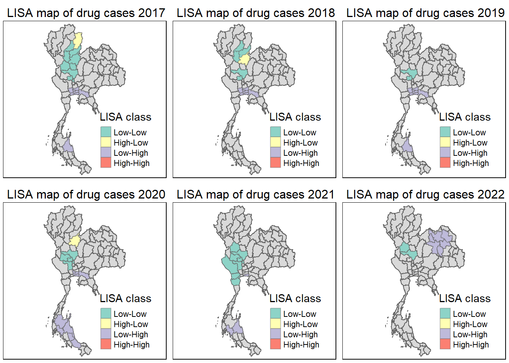
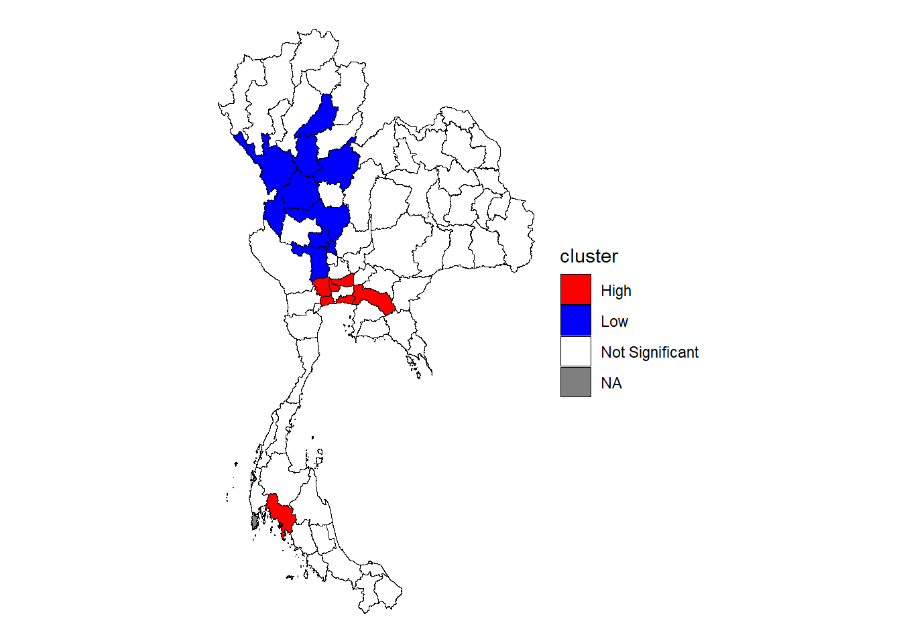

pacman::p_load(sf, sfdep, tmap, tidyverse, knitr)Take-Home Exercise 2
Take-Home
Code
Background
Drug abuse is associated with significant negative health, financial and social consequences. Yet, illicit drug consumption remains highly prevalent and continues to be a growing problem worldwide. In 2021, 1 in 17 people aged 15–64 in the world had used a drug in the past 12 months. Notwithstanding population growth, the estimated number of drug users grew from 240 million in 2011 to 296 million in 2021.
The geopolitics of Thailand which is near the Golden Triangle of Indochina, the largest drug production site in Asia, and the constant transportation infrastructure development made Thailand became market and transit routes for drug trafficking to the third countries.
In Thailand, drug abuse is one of the major social issue. There are about 2.7 million youths using drugs in Thailand. Among youths aged between 15 and 19 years, there are about 300,000 who have needs for drug treatment. Most of Thai youths involved with drugs are vocational-school students, which nearly doubles in number compared to secondary-school students.
Objectives
If the key indicators of drug abuse of Thailand are independent from space.
If the indicators of drug abuse is indeed spatial dependent, then, you would like to detect where are the clusters and outliers, and the hotspots.
Last but not least, you are also interested to investigate how the observation above evolve over time.
Dataset
Thailand Drug Offenses [2017-2022] at Kaggle.
Thailand - Subnational Administrative Boundaries at HDX. You are required to use the province boundary data set.
Packages
sf provides a standardised way to work with spatial vector data (points, lines, polygons)
spdep focuses on spatial econometrics and spatial statistics
tmap create thematic maps
tidyverse for easy data manipulation and some visualisation
knitr facilitates the integration of R code and documentation in reproducible research reports
Importing data
Let’s load the csv file from kaggle about Thailand’s drug offenses
thai_drug <- read_csv("data/thai_drug_offenses_2017_2022.csv")Rows: 7392 Columns: 5
── Column specification ────────────────────────────────────────────────────────
Delimiter: ","
chr (3): types_of_drug_offenses, province_th, province_en
dbl (2): fiscal_year, no_cases
ℹ Use `spec()` to retrieve the full column specification for this data.
ℹ Specify the column types or set `show_col_types = FALSE` to quiet this message.set.seed(2932)class(thai_drug)[1] "spec_tbl_df" "tbl_df" "tbl" "data.frame" Next let’s load the shapefile of Thailand’s province boundary
thai_sf <- st_read(dsn = "data/",
layer = "tha_admbnda_adm1_rtsd_20220121")Reading layer `tha_admbnda_adm1_rtsd_20220121' from data source
`C:\IS415\Take-home_Ex\Take-home_Ex02\data' using driver `ESRI Shapefile'
Simple feature collection with 77 features and 16 fields
Geometry type: MULTIPOLYGON
Dimension: XY
Bounding box: xmin: 97.34336 ymin: 5.613038 xmax: 105.637 ymax: 20.46507
Geodetic CRS: WGS 84thai_sfSimple feature collection with 77 features and 16 fields
Geometry type: MULTIPOLYGON
Dimension: XY
Bounding box: xmin: 97.34336 ymin: 5.613038 xmax: 105.637 ymax: 20.46507
Geodetic CRS: WGS 84
First 10 features:
Shape_Leng Shape_Area ADM1_EN ADM1_TH ADM1_PCODE
1 2.417227 0.13133873 Bangkok กรุงเทพมหานคร TH10
2 1.695100 0.07926199 Samut Prakan สมุทรปราการ TH11
3 1.251111 0.05323766 Nonthaburi นนทบุรี TH12
4 1.884945 0.12698345 Pathum Thani ปทุมธานี TH13
5 3.041716 0.21393797 Phra Nakhon Si Ayutthaya พระนครศรีอยุธยา TH14
6 1.739908 0.07920961 Ang Thong อ่างทอง TH15
7 5.693342 0.54578838 Lop Buri ลพบุรี TH16
8 1.778326 0.06872655 Sing Buri สิงห์บุรี TH17
9 2.896316 0.20907828 Chai Nat ชัยนาท TH18
10 4.766446 0.29208711 Saraburi สระบุรี TH19
ADM1_REF ADM1ALT1EN ADM1ALT2EN ADM1ALT1TH ADM1ALT2TH ADM0_EN ADM0_TH
1 <NA> <NA> <NA> <NA> <NA> Thailand ประเทศไทย
2 <NA> <NA> <NA> <NA> <NA> Thailand ประเทศไทย
3 <NA> <NA> <NA> <NA> <NA> Thailand ประเทศไทย
4 <NA> <NA> <NA> <NA> <NA> Thailand ประเทศไทย
5 <NA> <NA> <NA> <NA> <NA> Thailand ประเทศไทย
6 <NA> <NA> <NA> <NA> <NA> Thailand ประเทศไทย
7 <NA> <NA> <NA> <NA> <NA> Thailand ประเทศไทย
8 <NA> <NA> <NA> <NA> <NA> Thailand ประเทศไทย
9 <NA> <NA> <NA> <NA> <NA> Thailand ประเทศไทย
10 <NA> <NA> <NA> <NA> <NA> Thailand ประเทศไทย
ADM0_PCODE date validOn validTo geometry
1 TH 2019-02-18 2022-01-22 -001-11-30 MULTIPOLYGON (((100.6139 13...
2 TH 2019-02-18 2022-01-22 -001-11-30 MULTIPOLYGON (((100.7306 13...
3 TH 2019-02-18 2022-01-22 -001-11-30 MULTIPOLYGON (((100.3415 14...
4 TH 2019-02-18 2022-01-22 -001-11-30 MULTIPOLYGON (((100.8916 14...
5 TH 2019-02-18 2022-01-22 -001-11-30 MULTIPOLYGON (((100.5131 14...
6 TH 2019-02-18 2022-01-22 -001-11-30 MULTIPOLYGON (((100.3332 14...
7 TH 2019-02-18 2022-01-22 -001-11-30 MULTIPOLYGON (((101.3453 15...
8 TH 2019-02-18 2022-01-22 -001-11-30 MULTIPOLYGON (((100.3691 15...
9 TH 2019-02-18 2022-01-22 -001-11-30 MULTIPOLYGON (((100.1199 15...
10 TH 2019-02-18 2022-01-22 -001-11-30 MULTIPOLYGON (((101.3994 15...Data Wrangling
Misspelled province
I would like to perform a left join on province_en of thai_drug and ADM1_EN of thai_sf, so I would have to check if there are any missing data or mismatch
combined_data <- bind_cols(thai_drug = sort(unique(thai_drug$province_en)), thai_sf = sort(unique(thai_sf$ADM1_EN)))
# Create a new column to compare the values
combined_data <- combined_data %>%
mutate(same_values = thai_drug == thai_sf) %>% filter(same_values == FALSE)
# View the result
combined_data# A tibble: 3 × 3
thai_drug thai_sf same_values
<chr> <chr> <lgl>
1 buogkan Bueng Kan FALSE
2 Loburi Loei FALSE
3 Loei Lop Buri FALSE From here we can see that there is a mismatch in the data where there are spelling errors from the data provided kaggle so lets change it.
thai_drug <- thai_drug %>%
mutate(province_en = recode(province_en,
"buogkan" = "Bueng Kan",
"Loburi" = "Lop Buri"))Let’s check if there is any mismatch again
combined_data <- bind_cols(thai_drug = sort(unique(thai_drug$province_en)), thai_sf = sort(unique(thai_sf$ADM1_EN)))
combined_data <- combined_data %>%
mutate(same_values = thai_drug == thai_sf) %>% filter(same_values == FALSE)
combined_data# A tibble: 0 × 3
# ℹ 3 variables: thai_drug <chr>, thai_sf <chr>, same_values <lgl>CRS check
Let’s check the crs of the Thai boundary file
st_crs(thai_sf)Coordinate Reference System:
User input: WGS 84
wkt:
GEOGCRS["WGS 84",
DATUM["World Geodetic System 1984",
ELLIPSOID["WGS 84",6378137,298.257223563,
LENGTHUNIT["metre",1]]],
PRIMEM["Greenwich",0,
ANGLEUNIT["degree",0.0174532925199433]],
CS[ellipsoidal,2],
AXIS["latitude",north,
ORDER[1],
ANGLEUNIT["degree",0.0174532925199433]],
AXIS["longitude",east,
ORDER[2],
ANGLEUNIT["degree",0.0174532925199433]],
ID["EPSG",4326]]Let’s convert it into the projected coordinate system of 32647
thai_sf <- thai_sf %>% st_transform(crs = 32647)
st_crs(thai_sf)Coordinate Reference System:
User input: EPSG:32647
wkt:
PROJCRS["WGS 84 / UTM zone 47N",
BASEGEOGCRS["WGS 84",
ENSEMBLE["World Geodetic System 1984 ensemble",
MEMBER["World Geodetic System 1984 (Transit)"],
MEMBER["World Geodetic System 1984 (G730)"],
MEMBER["World Geodetic System 1984 (G873)"],
MEMBER["World Geodetic System 1984 (G1150)"],
MEMBER["World Geodetic System 1984 (G1674)"],
MEMBER["World Geodetic System 1984 (G1762)"],
MEMBER["World Geodetic System 1984 (G2139)"],
ELLIPSOID["WGS 84",6378137,298.257223563,
LENGTHUNIT["metre",1]],
ENSEMBLEACCURACY[2.0]],
PRIMEM["Greenwich",0,
ANGLEUNIT["degree",0.0174532925199433]],
ID["EPSG",4326]],
CONVERSION["UTM zone 47N",
METHOD["Transverse Mercator",
ID["EPSG",9807]],
PARAMETER["Latitude of natural origin",0,
ANGLEUNIT["degree",0.0174532925199433],
ID["EPSG",8801]],
PARAMETER["Longitude of natural origin",99,
ANGLEUNIT["degree",0.0174532925199433],
ID["EPSG",8802]],
PARAMETER["Scale factor at natural origin",0.9996,
SCALEUNIT["unity",1],
ID["EPSG",8805]],
PARAMETER["False easting",500000,
LENGTHUNIT["metre",1],
ID["EPSG",8806]],
PARAMETER["False northing",0,
LENGTHUNIT["metre",1],
ID["EPSG",8807]]],
CS[Cartesian,2],
AXIS["(E)",east,
ORDER[1],
LENGTHUNIT["metre",1]],
AXIS["(N)",north,
ORDER[2],
LENGTHUNIT["metre",1]],
USAGE[
SCOPE["Navigation and medium accuracy spatial referencing."],
AREA["Between 96°E and 102°E, northern hemisphere between equator and 84°N, onshore and offshore. China. Indonesia. Laos. Malaysia - West Malaysia. Mongolia. Myanmar (Burma). Russian Federation. Thailand."],
BBOX[0,96,84,102]],
ID["EPSG",32647]]Hole in boundary file
Next check if there are any holes with the boundary file
u_thai <- st_union(thai_sf)
plot(u_thai)
Missing row check
Lastly check for the drug abuse csv if there are any missing rows
na <- thai_drug %>%
summarise(na_year = sum(is.na(fiscal_year)),
na_province = sum(is.na(province_en)),
na_drug_offense = sum(is.na(types_of_drug_offenses)),
na_cases = sum(is.na(no_cases)))
print(na)# A tibble: 1 × 4
na_year na_province na_drug_offense na_cases
<int> <int> <int> <int>
1 0 0 0 0Left Join
Great now let’s left join both the boundary file and the csv
thai <- left_join(thai_sf,thai_drug, by = c("ADM1_EN" = "province_en")) %>%
select(1:3, 17:19,21)As the combined file is quite huge let’s see how we can split it even more, let’s choose the only relevant type of drug offenses
unique(thai$types_of_drug_offenses) [1] "drug_use_cases"
[2] "suspects_in_drug_use_cases"
[3] "possession_cases"
[4] "suspects_in_possession_cases"
[5] "possession_with_intent_to_distribute_cases"
[6] "suspects_in_possession_with_intent_to_distribute_cases"
[7] "trafficking_cases"
[8] "suspects_in_trafficking_cases"
[9] "production_cases"
[10] "suspects_in_production_cases"
[11] "import_cases"
[12] "suspects_in_import_cases"
[13] "export_cases"
[14] "suspects_in_export_cases"
[15] "conspiracy_cases"
[16] "suspects_in_conspiracy_cases" Let’s choose everything but the suspects as suspects are not really confirmed cases but it could provide some supplementary in comparison.
drug_offenses <- c(
"drug_use_cases", "possession_cases", "possession_with_intent_to_distribute_cases", "trafficking_cases", "production_cases", "import_cases", "export_cases", "conspiracy_cases"
)
thai <- thai %>% filter(types_of_drug_offenses %in% drug_offenses )Next let’s split it up by the years
drug <- list()
for (year in 2017:2022) {
drug[[as.character(year)]] <- thai %>% filter(fiscal_year == year)
}
glimpse(drug[["2017"]])Rows: 616
Columns: 7
$ Shape_Leng <dbl> 2.417227, 2.417227, 2.417227, 2.417227, 2.41722…
$ Shape_Area <dbl> 0.13133873, 0.13133873, 0.13133873, 0.13133873,…
$ ADM1_EN <chr> "Bangkok", "Bangkok", "Bangkok", "Bangkok", "Ba…
$ fiscal_year <dbl> 2017, 2017, 2017, 2017, 2017, 2017, 2017, 2017,…
$ types_of_drug_offenses <chr> "drug_use_cases", "possession_cases", "possessi…
$ no_cases <dbl> 11871, 9224, 6374, 950, 316, 0, 2, 10, 820, 334…
$ geometry <MULTIPOLYGON [m]> MULTIPOLYGON (((674339.8 15..., MU…Simple Visualisations
Let’s just do a simple visualisation of the drug uses in the year 2017 to see what we are dealing with
qtm(drug[["2017"]], "no_cases")Some legend labels were too wide. These labels have been resized to 0.62, 0.58. Increase legend.width (argument of tm_layout) to make the legend wider and therefore the labels larger.
Nothing much can be visualised so let’s separate out the type of cases again to only drug use
temp <- drug[["2017"]]
tmap_mode("plot")tmap mode set to plottingtemp %>%
filter(types_of_drug_offenses == "drug_use_cases") %>%
tm_shape() +
tm_fill("no_cases",
n = 5,
style = "equal") +
tm_borders(alpha = 0.5)Some legend labels were too wide. These labels have been resized to 0.62. Increase legend.width (argument of tm_layout) to make the legend wider and therefore the labels larger.
Global Measures of Spatial Autocorrelation
Calculating Neighbours and Weights
I would be defining neighbour’s based on Queens contiguity, and also let’s assign spatial weights to each neighbouring polygon
wm_q_list <- list()
for (year in 2017:2022) {
wm_q <- drug[[as.character(year)]] %>%
mutate(nb = st_contiguity((.), queen=TRUE),
wt = st_weights(nb, style = "W",allow_zero=TRUE),
.before = 1)
wm_q_list[[as.character(year)]] <- wm_q
}As this takes a lot of time lets save this list into a rds file
write_rds(wm_q_list, "data/rds/wm_q_list.rds")Global Moran’s I Test
To assess spatial autocorrelation in our dataset, or how the presence of drug use cases in a province may form clusters.
wm_q <- wm_q_list[["2017"]]
global_moran_test(wm_q$no_cases,
wm_q$nb,
wm_q$wt,
zero.policy = TRUE,
na.action=na.omit)
Moran I test under randomisation
data: x
weights: listw
Moran I statistic standard deviate = 4.8794, p-value = 5.319e-07
alternative hypothesis: greater
sample estimates:
Moran I statistic Expectation Variance
3.981645e-02 -1.626016e-03 7.213589e-05 wm_q <- wm_q_list[["2018"]]
global_moran_test(wm_q$no_cases,
wm_q$nb,
wm_q$wt,
zero.policy = TRUE,
na.action = na.omit)
Moran I test under randomisation
data: x
weights: listw
Moran I statistic standard deviate = 3.6488, p-value = 0.0001318
alternative hypothesis: greater
sample estimates:
Moran I statistic Expectation Variance
2.910879e-02 -1.626016e-03 7.095291e-05 wm_q <- wm_q_list[["2019"]]
global_moran_test(wm_q$no_cases,
wm_q$nb,
wm_q$wt,
zero.policy = TRUE,
na.action=na.omit)
Moran I test under randomisation
data: x
weights: listw
Moran I statistic standard deviate = 3.2694, p-value = 0.0005389
alternative hypothesis: greater
sample estimates:
Moran I statistic Expectation Variance
2.654296e-02 -1.626016e-03 7.423478e-05 wm_q <- wm_q_list[["2020"]]
global_moran_test(wm_q$no_cases,
wm_q$nb,
wm_q$wt,
zero.policy = TRUE,
na.action=na.omit)
Moran I test under randomisation
data: x
weights: listw
Moran I statistic standard deviate = 2.9975, p-value = 0.001361
alternative hypothesis: greater
sample estimates:
Moran I statistic Expectation Variance
2.444995e-02 -1.626016e-03 7.567537e-05 wm_q <- wm_q_list[["2021"]]
global_moran_test(wm_q$no_cases,
wm_q$nb,
wm_q$wt,
zero.policy = TRUE,
na.action=na.omit)
Moran I test under randomisation
data: x
weights: listw
Moran I statistic standard deviate = 2.6409, p-value = 0.004134
alternative hypothesis: greater
sample estimates:
Moran I statistic Expectation Variance
2.149092e-02 -1.626016e-03 7.662109e-05 wm_q <- wm_q_list[["2022"]]
global_moran_test(wm_q$no_cases,
wm_q$nb,
wm_q$wt,
zero.policy = TRUE,
na.action=na.omit)
Moran I test under randomisation
data: x
weights: listw
Moran I statistic standard deviate = 1.8315, p-value = 0.03351
alternative hypothesis: greater
sample estimates:
Moran I statistic Expectation Variance
1.448435e-02 -1.626016e-03 7.737631e-05 From the test for the different years, the positive moran’s I statistic suggests that there is clustering, or a degree of spatial autocorrelation. This might be expected as spreading the use of drugs to neighbouring places seems like a common thing to do, if you wanna spread your influence.
We can also see that the P-value is small. From a frequentist approach, we can see that this is unlikely to have occured by chance.
To strengthen our findings, we run a monte-carlo simulation.
Global Moran’s I permutation test
wm_q <- wm_q_list[["2017"]]
global_moran_perm(wm_q$no_cases,
wm_q$nb,
wm_q$wt,
zero.policy = TRUE,
nsim = 999,
na.action=na.omit)
Monte-Carlo simulation of Moran I
data: x
weights: listw
number of simulations + 1: 1000
statistic = 0.039816, observed rank = 998, p-value = 0.004
alternative hypothesis: two.sidedwm_q <- wm_q_list[["2018"]]
global_moran_perm(wm_q$no_cases,
wm_q$nb,
wm_q$wt,
zero.policy = TRUE,
nsim = 999,
na.action=na.omit)
Monte-Carlo simulation of Moran I
data: x
weights: listw
number of simulations + 1: 1000
statistic = 0.029109, observed rank = 999, p-value = 0.002
alternative hypothesis: two.sidedwm_q <- wm_q_list[["2019"]]
global_moran_perm(wm_q$no_cases,
wm_q$nb,
wm_q$wt,
zero.policy = TRUE,
nsim = 999,
na.action=na.omit)
Monte-Carlo simulation of Moran I
data: x
weights: listw
number of simulations + 1: 1000
statistic = 0.026543, observed rank = 997, p-value = 0.006
alternative hypothesis: two.sidedwm_q <- wm_q_list[["2020"]]
global_moran_perm(wm_q$no_cases,
wm_q$nb,
wm_q$wt,
zero.policy = TRUE,
nsim = 999,
na.action=na.omit)
Monte-Carlo simulation of Moran I
data: x
weights: listw
number of simulations + 1: 1000
statistic = 0.02445, observed rank = 985, p-value = 0.03
alternative hypothesis: two.sidedwm_q <- wm_q_list[["2021"]]
global_moran_perm(wm_q$no_cases,
wm_q$nb,
wm_q$wt,
zero.policy = TRUE,
nsim = 999,
na.action=na.omit)
Monte-Carlo simulation of Moran I
data: x
weights: listw
number of simulations + 1: 1000
statistic = 0.021491, observed rank = 986, p-value = 0.028
alternative hypothesis: two.sidedwm_q <- wm_q_list[["2022"]]
global_moran_perm(wm_q$no_cases,
wm_q$nb,
wm_q$wt,
zero.policy = TRUE,
nsim = 999,
na.action=na.omit)
Monte-Carlo simulation of Moran I
data: x
weights: listw
number of simulations + 1: 1000
statistic = 0.014484, observed rank = 954, p-value = 0.092
alternative hypothesis: two.sidedFrom the outputs above, we can observe that the Moran’s I statistic (after 1000 permutations) for the year 2017 0.039816 with a p-value < 2.2e-16, year 2018 0.029109 with a p-value 0.002, year 2019 0.026543 with a p-value 0.006, year 2020 0.02445 with a p-value 0.03, year 2021 0.014484 with a p-value 0.092. All of these are almost identical to the previous result with low p-value which suggest that it did not happen randomly.
We can visualise it with a histogram
wm_q <- wm_q_list[["2017"]]
gmres <-global_moran_perm(wm_q$no_cases,
wm_q$nb,
wm_q$wt,
zero.policy = TRUE,
nsim = 999,
na.action=na.omit)
hist(gmres$res, main="Histogram of Global Moran's I Monte-Carlo Simulation 2017", xlab="Monte-Carlo Results", ylab="Frequency")
abline(v = gmres$statistic, col = "red")
wm_q <- wm_q_list[["2018"]]
gmres <-global_moran_perm(wm_q$no_cases,
wm_q$nb,
wm_q$wt,
zero.policy = TRUE,
nsim = 999,
na.action=na.omit)
hist(gmres$res, main="Histogram of Global Moran's I Monte-Carlo Simulation 2018", xlab="Monte-Carlo Results", ylab="Frequency")
abline(v = gmres$statistic, col = "red")wm_q <- wm_q_list[["2019"]]
gmres <-global_moran_perm(wm_q$no_cases,
wm_q$nb,
wm_q$wt,
zero.policy = TRUE,
nsim = 999,
na.action=na.omit)
hist(gmres$res, main="Histogram of Global Moran's I Monte-Carlo Simulation 2019", xlab="Monte-Carlo Results", ylab="Frequency")
abline(v = gmres$statistic, col = "red")wm_q <- wm_q_list[["2020"]]
gmres <-global_moran_perm(wm_q$no_cases,
wm_q$nb,
wm_q$wt,
zero.policy = TRUE,
nsim = 999,
na.action=na.omit)
hist(gmres$res, main="Histogram of Global Moran's I Monte-Carlo Simulation 2020", xlab="Monte-Carlo Results", ylab="Frequency")
abline(v = gmres$statistic, col = "red")
wm_q <- wm_q_list[["2021"]]
gmres <-global_moran_perm(wm_q$no_cases,
wm_q$nb,
wm_q$wt,
zero.policy = TRUE,
nsim = 999,
na.action=na.omit)
hist(gmres$res, main="Histogram of Global Moran's I Monte-Carlo Simulation 2021", xlab="Monte-Carlo Results", ylab="Frequency")
abline(v = gmres$statistic, col = "red")
Local Moran I
Local Indicators of Spatial Association, or LISA, let us evaluate clusters between provinces. Where higher values denote that the region is more heavily influenced by its surroundings.
Calculating Local Moran I
Calculating local Moran’s I statistics and append the results to the original dataframe as new columns.
lisa_list <- list()
for (year in 2017:2022) {
wm_q <- wm_q_list[[as.character(year)]] %>%
mutate(local_moran = local_moran(
no_cases, nb, wt, nsim = 999, zero.policy=TRUE),
.before = 1) %>%
unnest(local_moran)
lisa_list[[as.character(year)]] <- wm_q
}Visualising Local Moran I
lisa <- lisa_list[["2017"]]
map1 <- tm_shape(lisa) +
tm_fill("ii") +
tm_borders(alpha = 0.5) +
tm_view(set.zoom.limits = c(6,8)) +
tm_layout(main.title = "local Moran's I of No of cases",
main.title.size = 0.8)
map2 <- tm_shape(lisa) +
tm_fill("p_ii",
breaks = c(0, 0.001, 0.01, 0.05, 1),
labels = c("0.001", "0.01", "0.05", "Not sig")) +
tm_borders(alpha = 0.5) +
tm_layout(main.title = "p-value of local Moran's I",
main.title.size = 0.8)
tmap_arrange(map1, map2, ncol = 2)Variable(s) "ii" contains positive and negative values, so midpoint is set to 0. Set midpoint = NA to show the full spectrum of the color palette.From this map, we can observe statistically significant spatial autocorrelation in some central and central south province and the southern region. In the case of the central region, the significant local Moran’s I statistics tell us that for this province may or may not be a cluster as its quite close to being statistically insignificant or it could be an outlier. However for the central south of Thailand it seems to be statistically significant and the cluster did not happen by choice. Upon further looking at the province Bangkok seems to be one of the areas. The high clustering could be due to it being a tourist spot where they target foreigners which would have the money to buy drugs? But nothing much could be known.

As for the very south of Thailand it could be outliers which affect the southern Islands as it is surround by statistically insignificant places. And it is not really a widely popular tourist spot, where it could have a market for it.

lisa <- lisa_list[["2018"]]
map1 <- tm_shape(lisa) +
tm_fill("ii") +
tm_borders(alpha = 0.5) +
tm_view(set.zoom.limits = c(6,8)) +
tm_layout(main.title = "local Moran's I of No of cases",
main.title.size = 0.8)
map2 <- tm_shape(lisa) +
tm_fill("p_ii",
breaks = c(0, 0.001, 0.01, 0.05, 1),
labels = c("0.001", "0.01", "0.05", "Not sig")) +
tm_borders(alpha = 0.5) +
tm_layout(main.title = "p-value of local Moran's I",
main.title.size = 0.8)
tmap_arrange(map1, map2, ncol = 2)Variable(s) "ii" contains positive and negative values, so midpoint is set to 0. Set midpoint = NA to show the full spectrum of the color palette.
From this map, we can observe again that there is statistically significant spatial autocorrelation in central south province and the southern region. In the case of the central south it is the same few provinces which have high statistical significance which shows that the clustering wasn’t random and it is indeed a cluster with high drug cases. Also the central province is not gone, which means that it was indeed an outlier. For the southern province, it seems like the previous few islands were indeed outliers, and now the the remaining province seems to be becoming less statistically insignificant.
lisa <- lisa_list[["2019"]]
map1 <- tm_shape(lisa) +
tm_fill("ii") +
tm_borders(alpha = 0.5) +
tm_view(set.zoom.limits = c(6,8)) +
tm_layout(main.title = "local Moran's I of No of cases",
main.title.size = 0.8)
map2 <- tm_shape(lisa) +
tm_fill("p_ii",
breaks = c(0, 0.001, 0.01, 0.05, 1),
labels = c("0.001", "0.01", "0.05", "Not sig")) +
tm_borders(alpha = 0.5) +
tm_layout(main.title = "p-value of local Moran's I",
main.title.size = 0.8)
tmap_arrange(map1, map2, ncol = 2)Variable(s) "ii" contains positive and negative values, so midpoint is set to 0. Set midpoint = NA to show the full spectrum of the color palette.
Likewise it is the same as for the year 2018, however something to be seen is that the central south province, the p-value seems to be getting higher but is of statistical significance. Could it be that the drug operations are being handled and therefore they have to change the base of operation?
lisa <- lisa_list[["2020"]]
map1 <- tm_shape(lisa) +
tm_fill("ii") +
tm_borders(alpha = 0.5) +
tm_view(set.zoom.limits = c(6,8)) +
tm_layout(main.title = "local Moran's I of No of cases",
main.title.size = 0.8)
map2 <- tm_shape(lisa) +
tm_fill("p_ii",
breaks = c(0, 0.001, 0.01, 0.05, 1),
labels = c("0.001", "0.01", "0.05", "Not sig")) +
tm_borders(alpha = 0.5) +
tm_layout(main.title = "p-value of local Moran's I",
main.title.size = 0.8)
tmap_arrange(map1, map2, ncol = 2)Variable(s) "ii" contains positive and negative values, so midpoint is set to 0. Set midpoint = NA to show the full spectrum of the color palette.It seems like the hotspot of clustering of near central south seems to be dispersing, and the outlier of the central province seems to be back. However interesting the southern region seems to be expanding and the clustering seems like its starting to be satistically significant.
lisa <- lisa_list[["2021"]]
map1 <- tm_shape(lisa) +
tm_fill("ii") +
tm_borders(alpha = 0.5) +
tm_view(set.zoom.limits = c(6,8)) +
tm_layout(main.title = "local Moran's I of No of cases",
main.title.size = 0.8)
map2 <- tm_shape(lisa) +
tm_fill("p_ii",
breaks = c(0, 0.001, 0.01, 0.05, 1),
labels = c("0.001", "0.01", "0.05", "Not sig")) +
tm_borders(alpha = 0.5) +
tm_layout(main.title = "p-value of local Moran's I",
main.title.size = 0.8)
tmap_arrange(map1, map2, ncol = 2)Variable(s) "ii" contains positive and negative values, so midpoint is set to 0. Set midpoint = NA to show the full spectrum of the color palette.The central south provinces which was a hotspot in 2017-2019 seems to be completely gone and the area which we thought was an outlier in central area. It seems to have spread its fluence suggesting that there might be some clustering happening. However there could be a potential outlier in the far east. Likewise there is still some sort of clustering at the southern region.
lisa <- lisa_list[["2022"]]
map1 <- tm_shape(lisa) +
tm_fill("ii") +
tm_borders(alpha = 0.5) +
tm_view(set.zoom.limits = c(6,8)) +
tm_layout(main.title = "local Moran's I of No of cases",
main.title.size = 0.8)
map2 <- tm_shape(lisa) +
tm_fill("p_ii",
breaks = c(0, 0.001, 0.01, 0.05, 1),
labels = c("0.001", "0.01", "0.05", "Not sig")) +
tm_borders(alpha = 0.5) +
tm_layout(main.title = "p-value of local Moran's I",
main.title.size = 0.8)
tmap_arrange(map1, map2, ncol = 2)Variable(s) "ii" contains positive and negative values, so midpoint is set to 0. Set midpoint = NA to show the full spectrum of the color palette.
For this year there was complete shift, the previous years clustering seems to be completely gone and it has now been shift to the north-eastern region of Thailand which is rather interesting as there was no prior suggestion that it could happen. Near the western region there is some small clustering happening.
LISA
The local indicator of spatial association (LISA) for each observation gives an indication of the extent of significant spatial clustering of similar values around that observation. LISA map is a categorical map showing type of outliers and clusters. There are two types of outliers namely: High-Low and Low-High outliers. Likewise, there are two type of clusters namely: High-High and Low-Low cluaters.
High-Low Outliers: Provinces with a high value of drug cases, surrounded by neighbouring provinces with low values of drug cases.
Low-High Outliers: Provinces with a low value of drug cases, surrounded by neighbouring provinces with high values of drug cases.
High-High Clusters: Provinces with a high value of drug cases, surrounded by neighbouring provinces with high values of drug cases.
Low-Low Clusters: Provinces with a low value of drug cases, surrounded by neighbouring provinces with low values of drug cases.
lisa2017_sig <- lisa_list[["2017"]] %>% filter(p_ii_sim < 0.05)
lisa2018_sig <- lisa_list[["2018"]] %>% filter(p_ii_sim < 0.05)
lisa2019_sig <- lisa_list[["2019"]] %>% filter(p_ii_sim < 0.05)
lisa2020_sig <- lisa_list[["2020"]] %>% filter(p_ii_sim < 0.05)
lisa2021_sig <- lisa_list[["2021"]] %>% filter(p_ii_sim < 0.05)
lisa2022_sig <- lisa_list[["2022"]] %>% filter(p_ii_sim < 0.05)
# Create individual maps
map_2017 <- tm_shape(lisa_list[["2017"]]) +
tm_polygons() +
tm_borders(alpha = 0.5) +
tm_shape(lisa2017_sig) +
tm_fill("mean", title = "LISA class") +
tm_borders(alpha = 0.4) +
tm_layout(main.title = "LISA map of drug cases 2017", main.title.size = 1)
map_2018 <- tm_shape(lisa_list[["2018"]]) +
tm_polygons() +
tm_borders(alpha = 0.5) +
tm_shape(lisa2018_sig) +
tm_fill("mean", title = "LISA class") +
tm_borders(alpha = 0.4) +
tm_layout(main.title = "LISA map of drug cases 2018", main.title.size = 1)
map_2019 <- tm_shape(lisa_list[["2019"]]) +
tm_polygons() +
tm_borders(alpha = 0.5) +
tm_shape(lisa2019_sig) +
tm_fill("mean", title = "LISA class") +
tm_borders(alpha = 0.4) +
tm_layout(main.title = "LISA map of drug cases 2019", main.title.size = 1)
map_2020 <- tm_shape(lisa_list[["2020"]]) +
tm_polygons() +
tm_borders(alpha = 0.5) +
tm_shape(lisa2020_sig) +
tm_fill("mean", title = "LISA class") +
tm_borders(alpha = 0.4) +
tm_layout(main.title = "LISA map of drug cases 2020", main.title.size = 1)
map_2021 <- tm_shape(lisa_list[["2021"]]) +
tm_polygons() +
tm_borders(alpha = 0.5) +
tm_shape(lisa2021_sig) +
tm_fill("mean", title = "LISA class") +
tm_borders(alpha = 0.4) +
tm_layout(main.title = "LISA map of drug cases 2021", main.title.size = 1)
map_2022 <- tm_shape(lisa_list[["2022"]]) +
tm_polygons() +
tm_borders(alpha = 0.5) +
tm_shape(lisa2022_sig) +
tm_fill("mean", title = "LISA class") +
tm_borders(alpha = 0.4) +
tm_layout(main.title = "LISA map of drug cases 2022", main.title.size = 1)
tmap_mode("plot")tmap mode set to plottingtmap_arrange(map_2017, map_2018, map_2019, map_2020, map_2021, map_2022, ncol = 3)Warning: One tm layer group has duplicated layer types, which are omitted. To
draw multiple layers of the same type, use multiple layer groups (i.e. specify
tm_shape prior to each of them).
Warning: One tm layer group has duplicated layer types, which are omitted. To
draw multiple layers of the same type, use multiple layer groups (i.e. specify
tm_shape prior to each of them).
Warning: One tm layer group has duplicated layer types, which are omitted. To
draw multiple layers of the same type, use multiple layer groups (i.e. specify
tm_shape prior to each of them).
Warning: One tm layer group has duplicated layer types, which are omitted. To
draw multiple layers of the same type, use multiple layer groups (i.e. specify
tm_shape prior to each of them).
Warning: One tm layer group has duplicated layer types, which are omitted. To
draw multiple layers of the same type, use multiple layer groups (i.e. specify
tm_shape prior to each of them).
Warning: One tm layer group has duplicated layer types, which are omitted. To
draw multiple layers of the same type, use multiple layer groups (i.e. specify
tm_shape prior to each of them).
High-Low Outliers: Interestingly this only occurs for the year 2017, 2018 and 2020. And are generally found near low-low class
Low-High Outliers: Most of the province classified under this are situated near the central south of Thailand which is near the tourist area and also the very southern region. And for 2022 its actually in the northern eastern region.
High-High Clusters: There is an absence of any high-high classification, suggest that there are no high-value province surrounded by high-value province
Low-Low Clusters: Many of the provinces classified here are actually found in the western part of Thailand which is somewhat near the tourist area of Bangkok where there are low-high outliers.
Emerging Hot Spot Analysis
Calculating the local Gi*
Emerging hot spot Analysis (EHSA) is a technique that falls under exploratory spatial data analysis (ESDA). It combines the traditional ESDA technique of hot spot analysis using the Getis-Ord Gi* statistic with the traditional time-series Mann-Kendall test for monotonic trends.
The goal of EHSA is to evaluate how hot and cold spots are changing over time. It helps us answer the questions: are they becoming increasingly hotter, are they cooling down, or are they staying the same?
In brief, EHSA works by calculating the Gi* for each time period. The series of Gi* at each location is treated as a time-series and evaluated for a trend using the Mann-Kendall statistic. The Gi* and the Mann-Kendall are compared together to create 17 unique classifications to help better understand how the locations have changed over time.
First we create a neighbor list ensuring that the self is included and then create the weights list from the new neighbors list. Let’s do this for the year 2017 only
wm_idw_2017 <- drug[["2017"]] %>%
mutate(nb = include_self(st_contiguity(geometry)),
wt = st_inverse_distance(nb, geometry,
scale = 1,
alpha = 1),
.before = 1)Before we forget let’s write the wm_idw_2017 into an rds file for faster access
write_rds(wm_idw_2017, "data/rds/wm_idw_2017.rds")Following, we calculate the local Gi* using local_gstar_perm() on the no_cases column which creates a new data frame column called gi_star. We then unnest it using tidyr::unnest().
cases_gistar_2017 <- wm_idw_2017 %>%
transmute(gi_star = local_gstar_perm(no_cases, nb, wt, nsim = 199)) %>%
tidyr::unnest(gi_star)Lastly, we classify the clusters using a combination of mutate() and case_when() which is then piped into a ggplot map. While not a perfect recreation of the GeoDa map, it is very close—the differences likely due to conditional permutation (see conditional permutation vignette for more on significance calculation).
cases_gistar_2017 %>%
mutate(cluster = case_when(
p_folded_sim > 0.05 ~ "Not Significant",
p_folded_sim <= 0.05 & gi_star < 0 ~ "Low",
p_folded_sim <= 0.05 & gi_star > 0 ~ "High"
)) |>
ggplot(aes(fill = cluster)) +
geom_sf(lwd = 0.2, color = "black") +
scale_fill_manual(values = c("High" = "red",
"Low" = "Blue",
"Not Significant" = "white")) +
theme_void()
Indeed the High cluster and low cluster is similar to what we see in our LISA map.
Conclusion
This take home exercise has taught me about spatial autocorrelation and how although something looks one way. The values calculated could mean some sort statistical significance. This take home also taught me how to be cautious and that the data set provided only is not always ready to use when downloaded shown by the spelling error.
As for the actual data itself, it shows that there are certain hotspots for the drug abuses and how it affects neighbouring provinces. But it also does not necessarily stay there throughout for all 6 years but it shifts around. This could be that they are trying to avoid the police and trying to relocate so that they are harder to track but who knows. However it is still unclear on how the drug cases arise as the provinces that it appears on is rather random. As seen from the provinces that drug cases arises from 2020-2022